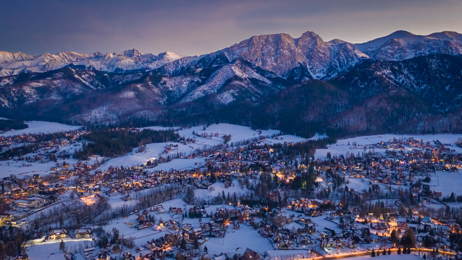

Zakopane
Połączenia dziennie: 1
Linia: 7
Godzina odjazdu z Poznania: 8:00
Cena: 60 PLN
Informacje o mieście:
Zakopane – miasto w południowej Polsce, w województwie małopolskim, siedziba powiatu tatrzańskiego.
Największa miejscowość w bezpośrednim otoczeniu Tatr, duży ośrodek sportów zimowych, potocznie nazywany zimową stolicą Polski. W jego granicach administracyjnych znajduje się znaczna część Tatrzańskiego Parku Narodowego.
